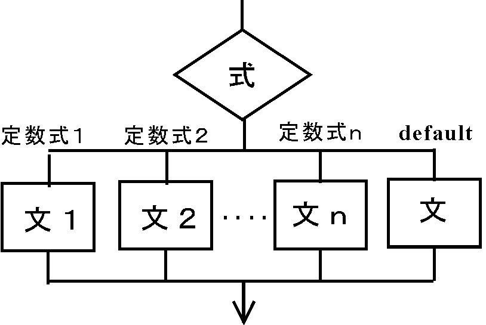
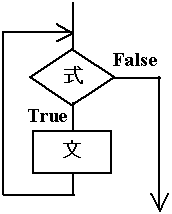
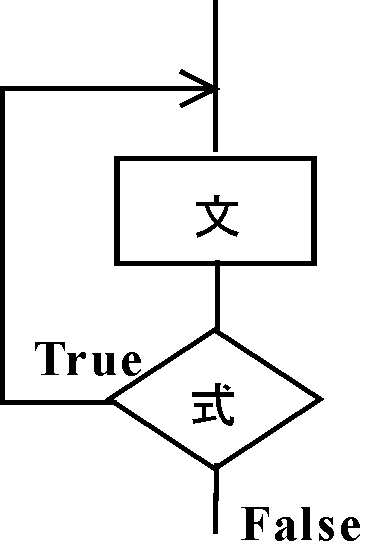

| プログラミングおよび演習 ＮＯ．６ |
①switch文（選択処理）
②while文（反復処理）
の２つを練習します。
| switch文 |
|  |
は変数の値を判断し、変数の値が定数１なら文１、定数２なら 文２、それ以外なら文３を実行する約束で使います。
例えば、キーボードから入力した文字によって（メニューを選択）、結果を出力するプログラムは次のようになります。
例 6-1 キー入力によって処理を選択する#include <stdio.h>
int main(void)
{
char c;
printf("\na,b,cのどれかを入れてください");
fflush(0);
scanf("%c", &c);
switch(c){
case 'a':
printf("aが入力されました。\n");
break;
case 'b':
printf("bが入力されました。\n");
break;
case 'c':
printf("cが入力されました。\n");
break;
default:
printf("a,b,c以外の文字が入力されました。\n");
break;
}
return(0);
}
|
例 6-2 算術式を入力して計算する（switch文の練習）#include <stdio.h>
int main(void)
{
int a,b;
char op;
printf("計算式を入力してください --> ");
fflush(0);
scanf("%d%c%d", &a, &op, &b);
switch(op){
case '+':
printf("%d%c%d=%d\n", a, op, b, a+b);
break;
case '-':
printf("%d%c%d=%d\n", a, op, b, a-b);
break;
default:
printf("演算子は加減算だけです。式を確認して下さい。\n");
break;
}
return(0);
} |
| 演習問題 6-1(Revised : 2015/06/18) 例6-2を、3つの変数a,b,cの間の加減算 a+b+c a+b-c a-b+c a-b-c が行えるようにプログラムを変更し、プログラム全体の動作を説明しなさい。なお、計算誤差が小さくなるように全ての変数をdoubleで宣言し、かつ計算を行いなさい。レポートには、演算子ごとに、a,b,cの組合せを2通り以上試した結果について示し、必ず手計算の結果と計算結果を比較すること。また、switch文の構造を分かりやすくするために、適正な字下げ処理を施したリストを示すこと。 ヒント： switch文を二重にして作る。その際、上位のswitch文にもbreak文を忘れないようにする。 |
| while文 |
|  |
while(条件式){
文１;
文２;
‥‥;
}
は条件式を判断し、条件式が成立していれば｛ ｝の中の文を実行します。
例えば、
は、{ }の中の文１と文２の処理を10回繰り返します。これは、先週習ったfor文で
for(i=0; i<10; i++){
と書くのと同じです。
以下の例6－3はキーボードから入力した文字が大文字なら小文字へ、 小文字なら大文字へ変換するプログラムです。while文を使って入力した文字が
コントロールZ（終了コード：EOF）でなければ、変換処理をいつまでも繰り返します。 一方、コントロールZの場合は処理を終了します。ただ１回だけ実行するのではなく、一定の働きをする処理を、
何回も繰り返し実行したい場合、このようなプログラムを作れば良いことがわかります。
例 6-3 大文字、小文字を変換するプログラム（while文の練習）#include <stdio.h>
#include <ctype.h>
int main(void)
{
char c;
printf("\ninput character: ");
fflush(0);
c=getchar();
while(c != EOF){
if(isupper(c)){
printf("%c ---> %c",c,tolower(c));
printf("\ninput character: ");
}else if(islower(c)){
printf("%c ---> %c",c,toupper(c));
printf("\ninput character: ");
}
fflush(0);
c=getchar();
}
return(0);
} |
のフォルダをエクスプローラで開いた後、実行ファイル（プロジェクト名.exeの名前のファイル）をクリックすればできます。
◎文字を扱う標準関数
今まで、コンパイラが予め用意している標準関数として、 scanf()、printf()の入出力関数や、exp(),sqrt(),sin(),cos()などの算術関数を習ってきました。
これらの関数を使うときは、 プログラムの先頭部分で各々
#include <stdio.h>
#include <math.h>
のように、関数に対応したヘッダファイルをインクルードする必要があることに注意してください。
上記の例題では、新しくgetchar()という文字入力関数が使われていますが、stdio.hのヘッダファイルをインクルードする必要があります。
この場合
とすると、キーボードから変数ｃに一文字入力する働きをします。上記の文は
scanf(“%c”,&c);としたのと同じ働きをします。
例6-3では、その他にislower(),isupper()とtolower(),toupper()の4つの文字関数を使っています。各々は、
のような働きをします。これらの関数を使う時は、ヘッダファイルctype.h をインクルードする必要があります。
| do while文 |
|  |
do{
文１;
文２;
‥‥;
}while(条件式);
do while文は、キー入力の値を判断して次の処理に進みたいプログラムを作るのに適しています。
例えば、例6-2のキー入力部分は次のように改良することができます。
この場合、'＋'または'-'の演算記号を入力されるまで、入力待ちを繰り返します。'＋'または'-'が入力されて始めて、次の処理に進みます。
のようにすると、while文の()の中の条件式が常に１ですから、｛ ｝の中の処理を永遠に繰り返すことになります。 ただし、このままではいつまでたってもプログラムが終了しません。
Eclipse上で実行している場合は、コンソール画面の停止ボタンを押して強制終了させてください。
一方、ターミナル画面で実行した場合、CTRL＋Cのキーを入力すると、 強制的にプログラムの実行を終らせることができます。
これらの強制終了キーは、間違ってプログラムが暴走してしまった場合にも使うことができます。
無限ループは次のように、for文やdo while文を用いても実現できます。
◎for文による無限ループ
| 演習問題 6-2 (Revised : 2015/06/18) 演習問題 5-1のプログラムを無限ループを使って何回も実行できるように改良せよ。レポートには適正な字下げ処理を施したリストを示すこと。さらにプログラムの動作を説明せよ。 |
| 演習問題 6-3 (Revised : 2016/06/16) (1)前回の演習問題5-3の前半の二重ループを今週習ったwhile文とdo while文にそれぞれ書き換えてみてください。その際、二つのfor文を両方とも書き換えることと、演習問題5-3と同じ出力が出るように注意をして書き換えて下さい。また、ループが深くなるごとに適正な字下げ処理をしてください。 (2)上記(1)の例は、規則的に１づつ増えるループ変数i,jを条件判断に使って、特定の回数の繰り返し処理を行う繰り返し文です。このような場合は、より短いコードで簡潔に記述できるという意味で、for文が適していると言えます。その一方で、例6-3のようにキーボードからの入力値に応じて条件判断を行なうような処理の場合は、while文もしくはdo while文が適していることになります。後者の場合、while文とdo while文の各々に長短があります。while文が便利になる場合と、反対にdo while文が便利になる場合について、各々の例をあげて考察してください。 |
■キーボードからの文字入力を繰り返す際の注意
例6-1のプログラムを何回も実行できるようにするには、プログラム全体をwhile(1)の無限ループの中に入れて、以下のようにすればよいことになります。
・例6-1のプログラムの変更
while(1){
printf("\na,b,cのどれかを入れてください");
fflush(0);
scanf("%c", &c);
switch(c){
case 'a':
printf("aが入力されました。\n");
break；
‥‥
‥‥
}
}
ところが、上記のプログラムを実行すると、ループ内の2回目以降のscanfによる文字入力がうまくいかなくなるトラブルが発生します。それは次のような原因によるものです。実は、キーボードから文字'a'を入力するために
と打ち込んだ場合、
の2文字が、コンピュータのキーボードバッファという場所に蓄えられます。プログラムの中で、最初に
が実行された場合は、キーボードバッファの文字'a'が文字型変数ｃに正しく読み込みまれます。この時、文字'a'はキーボードバッファから消去されます。しかし、改行コード(LF)は、キーボードバッファに残ったままです。この状態で、無限ループの2回目にキーボードバッファから文字を読み込んだ場合、上記の１回目のキー入力で、キーボードバッファに残っている、改行コードLFを読んでしまいます。2回目にキーボードから入力した本来の文字を読んでくれません。
この問題は、以下の(i),(ii),(iii)の何れかの方法により回避することができます。
(i) fflush(stdin)を呼び出して、キーボードバッファーを初期化する
fflush(stdin);
scanf("%c", &c); （または c=getchar(); でもよい)
のように、scanf()の前に、fflush(stdin)を入れます。
(ii) ダミー変数に、改行コードを空読みさせる
を付け加えても同じことができます。
(iii) scanfの書式%cの前に空白を挿入する
scanf(" %c", &c);
のようにしても、結果的に改行コードを空読みさせることができます。
次の演習問題6-4は以上の点に留意してやってみてください。
|
演習問題 6-４ （余力のある人へ）(Revised : 2015/06/25) (1) 1+2-5‥‥ という演算を行うために、 以下のように、+または-の演算子、数値、Enterキーの順に入力すると、答が逐次表示されるプログラムを無限ループを使って作って下さい（電卓風のプログラム）。 >0+1Enter >1+2Enter >3-5Enter >-2‥‥ ここで、下線付きの青字はキーボードから入力した文字、赤字は画面に出力される文字を表す。 (2) さらに以下のように掛け算、割り算も出来るプログラムにしてください。 >0+1Enter >1*4Enter >4-20Enter >-16/4Enter >-4‥‥ [補足説明] 例6-2を単純に無限ループで囲うだけでは不満足です。上記のように表示させるためには、もう一工夫してもらう必要があります。どのようにプログラムを書き換えればよいか考えてみてください。 |